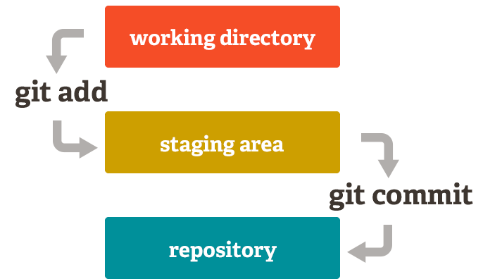
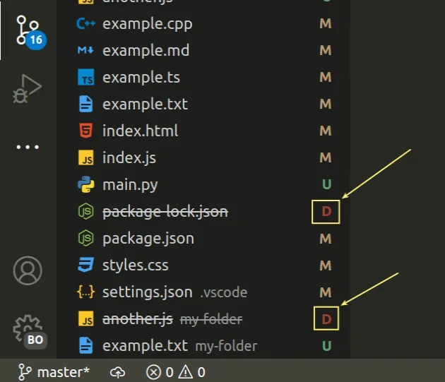

Git + GitHub
This session introduces version control using a shared workshop repository. We will first cover the ideas behind Git and GitHub, then use forks, branches, commits, pull requests, and VS Code to work through the same workflow together.
We will understand the workflow before we start typing commands.
First, the theory
We will define Git, GitHub, repositories, branches, staging, commits, remotes, and pull requests. The goal is to understand why each step exists before using the command for it.
Then, the workflow
Everyone will start from the same workshop repository, create a personal fork on GitHub, then work on a branch inside that fork. We will use the terminal only after the core ideas are clear.
Finally, collaboration
Each branch will be submitted back to the original repository through a pull request. I will merge the pull requests into main, then everyone will pull the updated main branch and see the combined changes.
Git, GitHub, and VS Code have different jobs.
Git
Git is version control software that runs on your computer. It records changes to files, creates commits, and lets you work on separate branches without making a new copy of the project folder.
GitHub
GitHub stores Git repositories online. It also provides collaboration features such as pull requests, code review, issues, and repository permissions.
VS Code
VS Code is the editor we will use to change files. Its Source Control panel reads information from Git and shows the same file states that commands such as git status report in the terminal.
A repository can exist locally and on GitHub.
Local repository
This is the copy on your computer. You can edit files, create branches, stage changes, and make commits locally even when you are not connected to GitHub.
Remote repository
This is a copy of the repository hosted somewhere else, such as GitHub. A local repository can save one or more remote names so Git knows which other repositories it can exchange commits with.
Staging lets you choose what belongs in the next commit.
Edited tracked files are modified. New files are untracked until Git includes them.
Staging selects the exact changes for the next commit.
A commit saves those staged changes locally. Nothing reaches GitHub until you push.

Branches keep work separate from main.

A branch is another line of development inside the same Git history. It does not create a separate project folder. The arrows show the order of the workflow, not files being physically moved from one box to another.
A pull request asks to merge one branch into another. After the pull request is merged, other local copies still need to pull the updated branch before they can see the new commits.
Each person will work from a fork of the workshop repository.
origin will refer to your fork. upstream will refer to the original workshop repository. We will set both remotes during the activity.
Install Git if needed, then verify that the terminal can find it.
Windows
The easiest option is the Git for Windows installer. A terminal option is also available through Windows Package Manager.
macOS
macOS may already have Git available. If it does not, install the command line tools, or use Homebrew if it is already installed.
Configure the name and email that Git will attach to your commits.
git configThis command reads or changes Git configuration.--globalThis stores the setting as the default for your user account on this computer instead of limiting it to one repository.user.name / user.emailThese values become the author information stored with commits you create. They make the history show who created each commit, and GitHub can associate a commit with your account when the commit email matches an email connected to that account.Fork the workshop repository, then clone your fork.
git clone <your-fork-url>Downloads your fork, its files, and its Git history to your computer. Git automatically names the repository you cloned origin.cd workshop-repoChanges the terminal's current directory so the next Git commands run inside the cloned project.git remote add upstream <url>Adds a second remote named upstream that points to the original workshop repository.git remote -vShows both saved remote names and URLs. You should see origin pointing to your fork and upstream pointing to the original repository.Create a branch, make a change, and look at how VS Code labels the files.
switch changes branches. The -c option creates a new branch before switching to it.
Edit only your assigned JSON file inside profiles/. Save the file before checking Source Control.

Modified
A tracked file has changed since the last commit.
Untracked
A new file exists but has not been included in Git history yet.
Inspect the changes, then stage the files you want in the next commit.
git add profiles/student-01.jsonStages your assigned profile file.git add profiles/Stages changes inside that folder.git add .Stages changes under the current directory. Run git status first so you know what will be included.git status again after staging. The file should now appear as a change that is ready to be committed.Create a local commit, then push your branch to your fork.
git commit records the staged changes. The -m option lets you provide the commit message directly in the command.
push sends your local commits to a remote repository. In this workflow, origin is your fork on GitHub. The final argument is the branch being pushed.
The -u option records the tracking relationship, so later pushes from the same branch can usually be written as git push.
Open a pull request, merge it into main, then update your local copy.
- Open your fork on GitHub and start a pull request.
- Set the base repository to the original workshop repository and the base branch to main. Your compare branch should be the branch from your fork.
- Read the diff so you can see exactly what your branch changes.
- I will merge the pull request into main on the original repository.
After the merge, the original repository's main branch has the new work, but your local main branch is still the older version.
We switch to main first because git pull updates the branch that is currently checked out. Here, upstream is the original workshop repository, so pulling from it brings the merged class changes into your local copy.
Practice the workflow once from fork to pull request.
- Fork the workshop repository, clone your fork, and add upstream.
- Create a branch from main, then make and save one small change.
- Run git status, stage the intended change, and commit it.
- Push your branch to origin and open a pull request to the original repository.
- After it is merged, switch to main and pull from upstream.